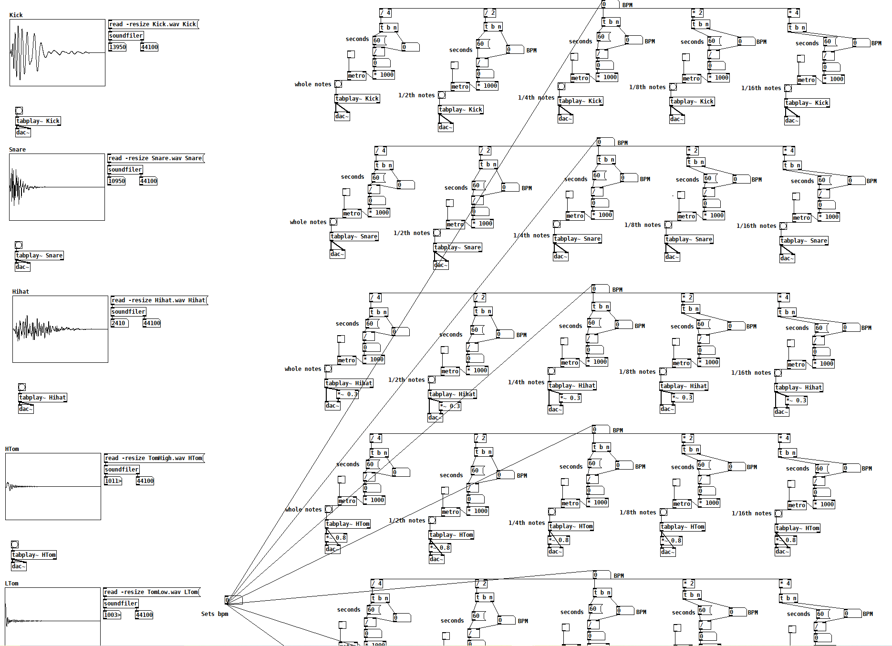

I am a recent graduate from UC San Diego where I acquired a B.A. in Interdisciplinary Computing and the Arts where I specialized in Computer Music and Music Technology.
I finished my first contract at a AAA studio, Electronic Arts, where I did Audio Implementation and worked as a Dialogue Designer on their latest football title Madden 23.
With my contract coming to its end I'm excited to announce I am actively pursuing new opportunities in the field of audio. For any questions please contact me at jcdrano@gmail.com.
Recent Work
My work as an Audio Artist at EA.
Day to day responsibilities included full audio pipeline for speech and commentary assets for Madden 23. I would edit, mix, and tag dialogue in Pro Tools so that the audio files
could be properly added to the audio asset database with the relevant tags. Then by using Create Audio's proprietary programming language
I would add the lines by building logic checks for audio events within a contex-based system.

Senior Capstone Project
Created in a time period where everyone was locked inside, I produced, composed, and engineered an indie rock EP that explored sonic and thematic uses of space. Inspired by the urge to break free of the global lockdown,
this experience will sonically transport you somewhere else where each moment explores the intangible.

Pure Data Drum Sequencer
Taking advantage of Pure Data as an visual programming language I created a virtual drum sequencer. The kit has a global bpm control and can be play from whole notes to 16ths. The drum kit sounds were recorded using in-house gear
at UC San Diego.

Audio Visualizer
Using javascript I created a fun visualizer to Kali Uchi's song Telepatia. The objects, the objects size, orientation and path traveled is all
determined by analyzing the frequency spectrum of the song. From the low end of the frequency spectrum to the high, each movement is uniquely determined by the song that
is currently playing.
Get In Touch
-
Address
11815 River Rim Rd.
San Diego, CA 92126
United States
-
Phone
661-544-0798
-
Email
jcdrano@gmail.com
.jpg)